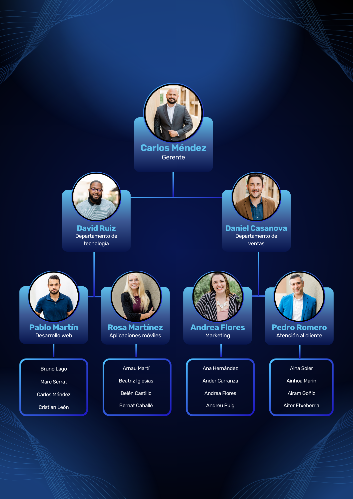
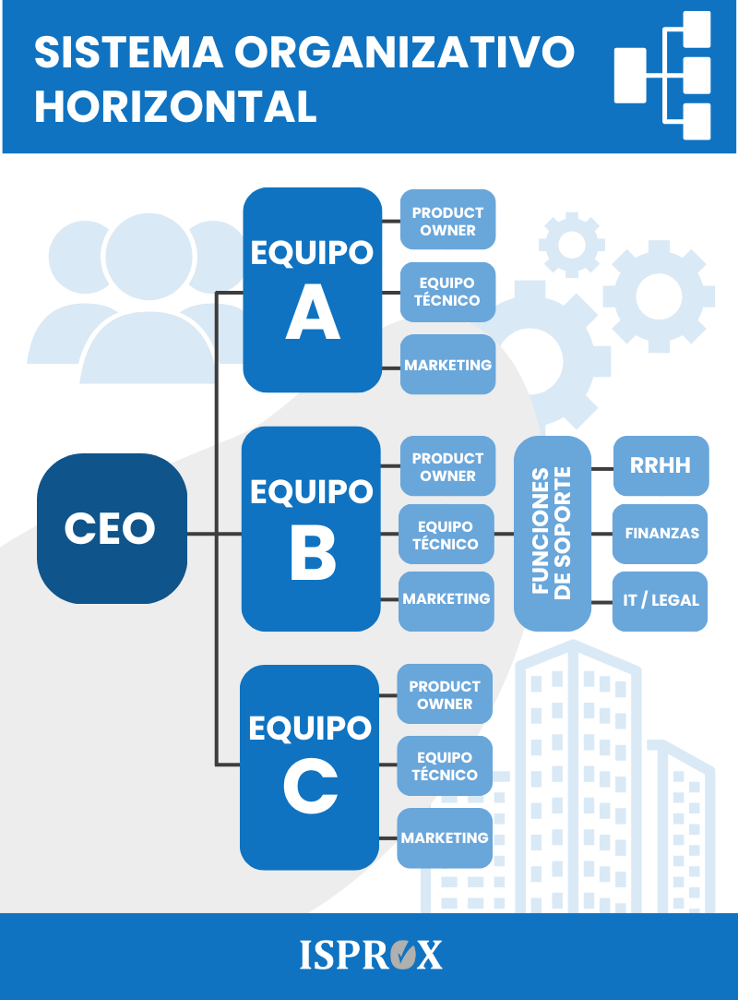

Áreas
La división por funciones especializadas.
Autoridad
Quién toma las decisiones finales.
Relaciones
Líneas de reporte y comunicación entre puestos y áreas.
Niveles Jerárquicos
Las capas de supervisión y reporte (alta dirección, mandos medios, operativo).
Daniel McCallum crea el primer organigrama moderno para gestionar el complejo sistema ferroviario de NY.
Frederick Taylor introduce la Administración Científica, optimizando cada tarea mediante el control jerárquico.
Henry Ford revoluciona la industria con la producción en masa, consolidando las pirámides corporativas rígidas.
Surgen las estructuras matriciales; las empresas comienzan a cruzar departamentos para proyectos globales.
Era de la Holacracia y redes líquidas. Equipos autónomos y dinámicos impulsados por inteligencia de datos.
EL DOBLE FILO DEL ORDEN
Ventajas
- Claridad en procesos
- Detección temprana de fallos
- Comunicación eficiente
- Reducción de ambigüedades
Desafíos
- Rigidez operativa
- Desactualización rápida
- Resistencia al cambio
- Complejidad innecesaria


¡CUIDADO CON ESTO!
Mantenerlo desactualizado.
Tener "jefes" sin autoridad real.
Líneas de mando confusas.